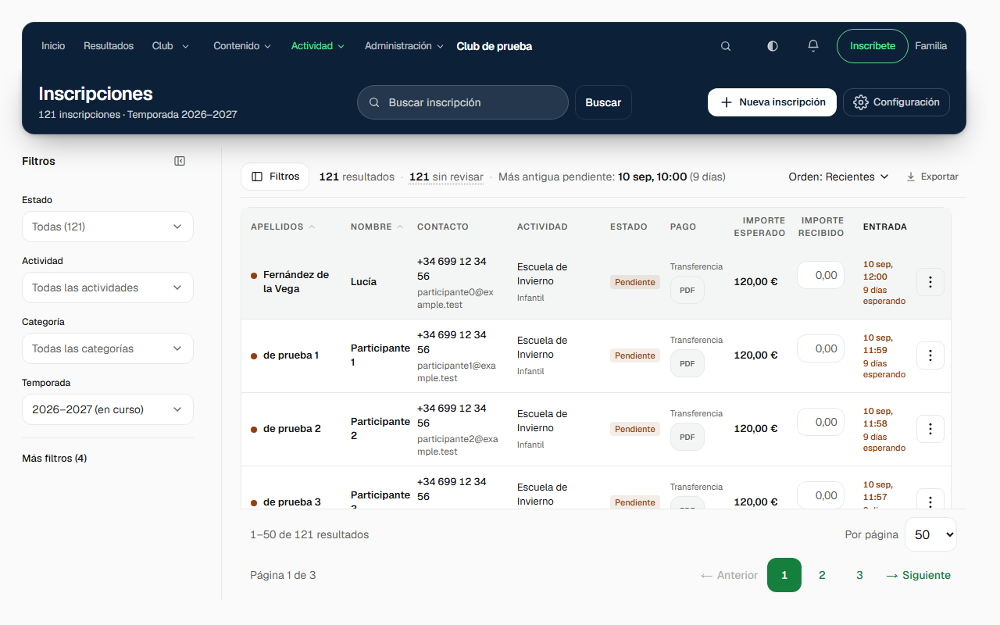
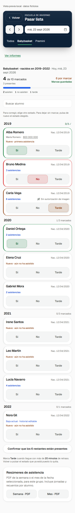

Familias
Inscriben a sus hijos, firman anexos y consultan documentos y actividades.
Diseñé y desarrollo la plataforma con la que el club gestiona inscripciones, entrenamientos, cuentas y competiciones. La usan familias, entrenadores y directiva.
Capturas del entorno de prueba; todos los datos son ficticios.

ENTORNO DE PRUEBA · DATOS FICTICIOS · NO REALES

ENTORNO DE PRUEBA · DATOS FICTICIOS · NO REALES
Antes había hojas de cálculo, mensajes y cambios en el código para resolver tareas habituales. Reuní esas gestiones en un producto que el club puede usar y configurar.
Inscriben a sus hijos, firman anexos y consultan documentos y actividades.
Ven entrenamientos, gestionan pistas y pasan lista desde el móvil.
Revisa altas, gestiona finanzas y publica contenido desde el panel.
Consulta datos de la FAB y organiza torneos 3x3 con marcador.
El mapa completo está aquí para quien quiera entrar en detalle. Abre un grupo y verás qué resuelve cada área.
Las áreas de escuelas y torneos dependen de la temporada o la configuración. El club cobra hoy por transferencia; la opción de tarjeta está implementada y apagada. Las notificaciones push todavía no tienen dispositivos suscritos.
Precios, textos e identidad del club se cambian sin editar el código ni desplegar de nuevo.
Las acciones protegidas comprueban quién actúa y qué puede hacer antes de escribir en la base.
Los datos federativos viven en otra base que la plataforma consulta en modo de solo lectura.
Los resultados llegan gracias a otro proyecto que también mantengo.
Ver el scraper de la federación ↗